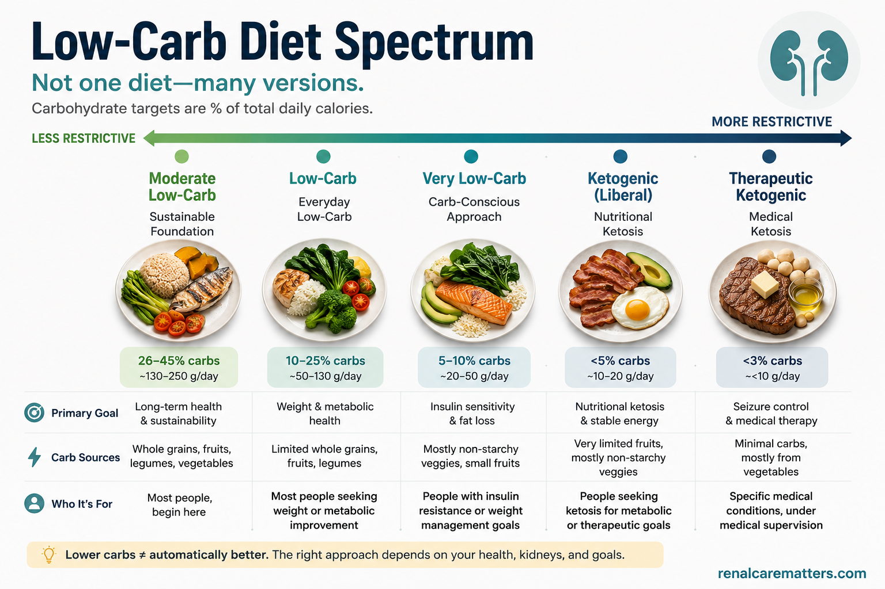
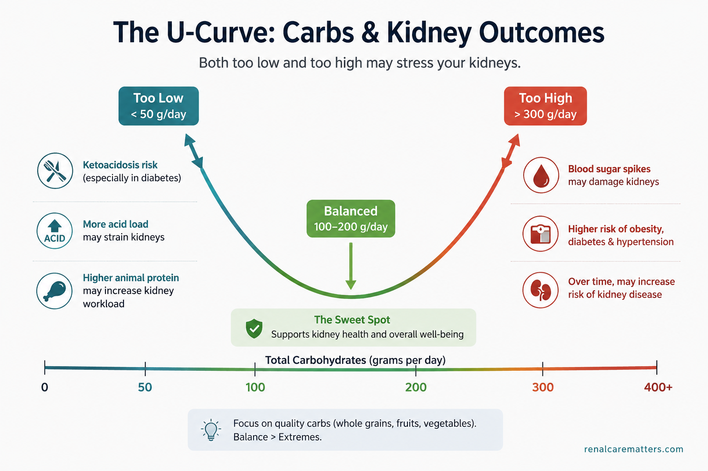
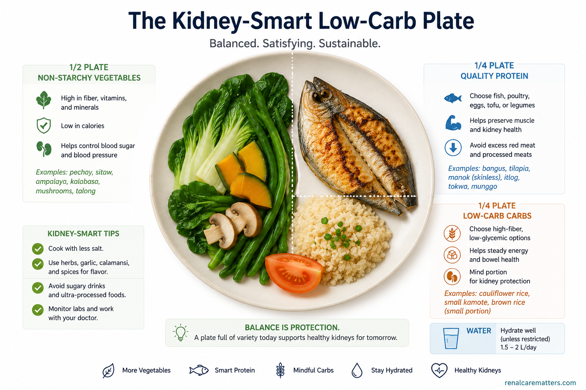
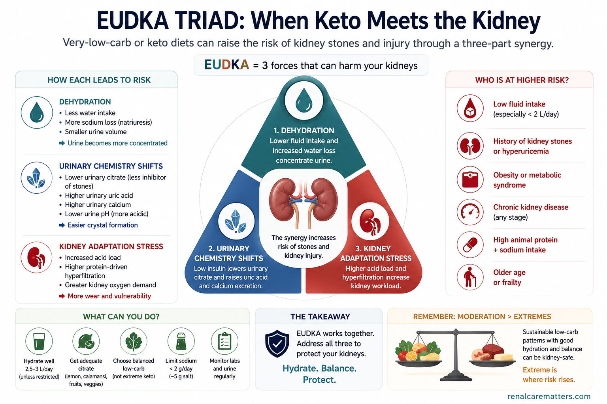
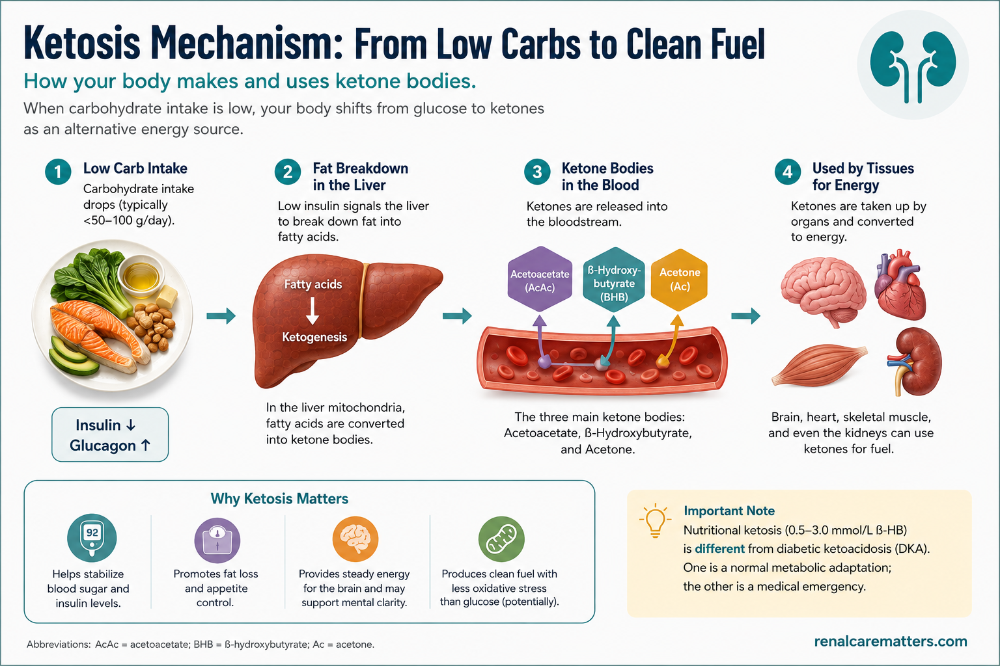
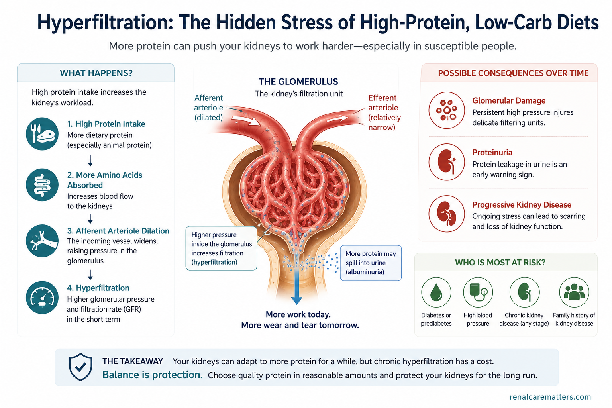
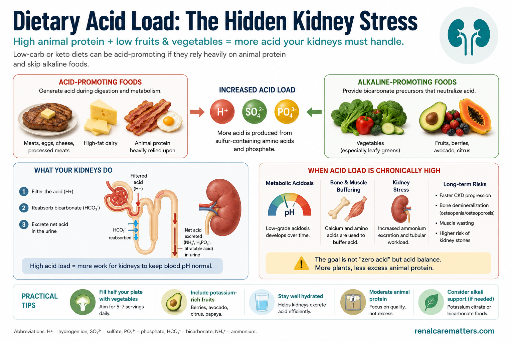
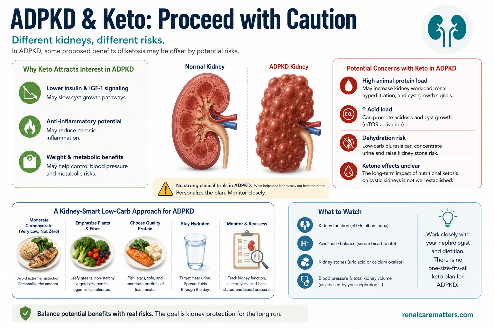

What "Low-Carb" Really MeansAno Talaga ang Ibig Sabihin ng "Low-Carb"Unsa Gyud ang Kahulugan sa "Low-Carb"Nanu Talaga ing Kabaldugan ning "Low-Carb"
You do not need a perfect, extreme diet. You need a balanced one you can actually keep. That is not a compromise — that is what the science says works best. Everything below builds on that single sentence.Hindi mo kailangan ng perpekto at sobrang diyeta. Kailangan mo ng balanseng diyeta na kaya mong panatilihin. Hindi iyan pagkukumpromiso — iyan ang sinasabi ng agham na pinakamainam. Lahat ng nasa ibaba ay nakabatay sa isang pangungusap na iyon.Dili nimo kinahanglan ang perpekto ug sobra nga diyeta. Kinahanglan nimo ang balanseng pagkaon nga imong mapadayon. Dili kana kompromiso — kana ang giingon sa siyensya nga pinakamaayo. Ang tanan sa ubos gitukod sa maong usa ka tudling.E mu kailangan ing perpektu at sobra a diyeta. Kailangan mu ing balanseng pamangan a agyu mung panatilyan. E ita kompromiso — ita ing sasabyan ning siyensya a pinakamayap. Ing anggang atyu king lalam mibase king metung a pangungusap a ita.
"Low-carb" is not one diet — it is a sliding scale. Cutting back on rice, bread, sugary drinks, and sweets is lower-carb and is good for almost everyone. Keto is the extreme end: so few carbs (usually under 50 grams a day — less than one cup of rice) that your body switches to burning fat for fuel. The stricter you go, the harder it is to keep up — and the more it matters whether your kidneys are healthy.Ang "low-carb" ay hindi iisang diyeta — ito ay isang sukat na paunti-unti. Ang pagbabawas ng kanin, tinapay, matatamis na inumin, at kendi ay mas mababang carb at mabuti para sa halos lahat. Ang keto ay ang sukdulan: napakakaunting carb (kadalasan wala pang 50 gramo bawat araw — kulang pa sa isang tasang kanin) kaya lumilipat ang iyong katawan sa pagsunog ng taba bilang panggatong. Habang tumitindi ang paghihigpit, mas mahirap itong panatilihin — at mas mahalaga kung malusog ang iyong mga bato.Ang "low-carb" dili usa ka diyeta — kini usa ka nagbalhinbalhin nga sukod. Ang pagkunhod sa kan-on, tinapay, tam-is nga ilimnon, ug kendi kay mas ubos nga carb ug maayo alang sa halos tanan. Ang keto mao ang kinatumyan: gamay ra kaayo nga carb (kasagaran ubos sa 50 gramo kada adlaw — kulang pa sa usa ka tasa nga kan-on) mao nga mobalhin ang imong lawas sa pagsunog og tambok isip gasolina. Kon mas istrikto ka, mas lisod kini padayonon — ug mas hinungdanon kon himsog ba ang imong mga kidney.Ing "low-carb" e metung a diyeta — iti metung a sukad a paunti-unti. Ing pamibaba ning nasi, tinape, matamis a inuman, at kendi kai mas mababang carb at mayap para king halos anggang tau. Ing keto ing sukdulan: kapiranung carb (karaniwan e pa 50 gramu kada aldo — kulang pa king metung a tasang nasi) inya lumilipat ing katawan mu king pamanugu ning taba bilang gatong. Habang tumitindi ing paghihigpit, mas mahirap iting panatilyan — at mas mahalaga nung malusug ing butu mu.
For most people, the win is not going keto. It is eating less rice, choosing better-quality rice, and putting vegetables and protein on the plate first. Those three habits give you most of the benefit of a low-carb diet without the strain of an extreme one.Para sa karamihan, ang panalo ay hindi ang pag-keto. Ito ay ang pagkain ng mas kaunting kanin, pagpili ng mas magandang uri ng kanin, at pag-una ng gulay at protina sa plato. Ang tatlong ugaling iyon ay nagbibigay sa iyo ng halos lahat ng benepisyo ng low-carb na diyeta nang walang hirap ng sukdulang paraan.Alang sa kadaghanan, ang kadaugan dili ang pag-keto. Kini ang pagkaon og mas gamay nga kan-on, pagpili og mas maayong klase sa kan-on, ug pag-una sa utanon ug protina sa plato. Kadtong tulo ka batasan naghatag kanimo sa halos tanang benepisyo sa low-carb nga pagkaon nga walay kalisod sa sobra nga paagi.Para king karakaldwan, ing panalu e ing pag-keto. Iti ing pamangan ning mas kapiranung nasi, pamamili ning mas mayap a klase ning nasi, at pamun-a ning gulay at protina king plato. Ding atlung ugali a ita bibye keka ning halos anggang benepisyu ning low-carb a pamangan alang king hirap ning sukdulan a paralan.
Watch out: many "low-carb" plans are really keto in disguiseMag-ingat: maraming "low-carb" na plano ay keto lang na nakabalatkayoPag-amping: daghang "low-carb" nga plano keto ra nga gitakubanMag-ingat: dakal a "low-carb" a plano keto mu a nakatalukbung
This matters a lot. Most popular "low-carb" diets — the strict Atkins start, "carnivore," and many online or influencer plans — actually cut carbs so low that they become keto, even though they are sold as gentle "low-carb." People often end up in ketosis without knowing it. So if someone tells you to "just go low-carb," treat it with the same caution as keto — especially if you have kidney disease or take an SGLT2 inhibitor. The safe version is to count the carbs and keep them at a moderate level on purpose, not to cut blindly.Napakahalaga nito. Karamihan ng sikat na "low-carb" na diyeta — ang mahigpit na simula ng Atkins, "carnivore," at maraming online o influencer na plano — ay talagang binababa ang carb nang sobra kaya nagiging keto, kahit ibinebenta bilang banayad na "low-carb." Madalas napupunta ang tao sa ketosis nang hindi nalalaman. Kaya kung may magsabi sa iyong "mag-low-carb ka lang," ituring ito nang may parehong ingat sa keto — lalo na kung may sakit ka sa bato o umiinom ng SGLT2 inhibitor. Ang ligtas na paraan ay bilangin ang carb at panatilihing katamtaman ito nang sadya, hindi ang basta-bastang pagbabawas.Importante kaayo kini. Kadaghanan sa sikat nga "low-carb" nga diyeta — ang istrikto nga sinugdan sa Atkins, "carnivore," ug daghang online o influencer nga plano — nagpaubos gyud sa carb pag-ayo maong mahimong keto, bisan gibaligya isip malumo nga "low-carb." Kasagaran maabot ang tawo sa ketosis nga wala mahibalo. Busa kon adunay moingon nga "mag-low-carb lang ka," tagda kini nga adunay parehas nga pag-amping sa keto — ilabina kon adunay ka sakit sa kidney o nag-inom og SGLT2 inhibitor. Ang luwas nga paagi mao ang pag-ihap sa carb ug pagpabilin niini sa kasarangan nga tinuyo, dili ang pagputol nga wala pagtan-aw.Mahalaga yang kaustu. Karakaldwan ning sikat a "low-carb" a diyeta — ing mahigpit a umpisa ning Atkins, "carnivore," at dakal a online o influencer a plano — pababa dang kaustu ing carb inya mimto yang keto, maski pibaluk bilang malumu a "low-carb." Karaniwan miras ing tau king ketosis alang balu. Inya nung atin mangabi keka a "mag-low-carb ka mu," lawan me a atin parehung ingat king keto — lalu na nung atin kang sakit king butu o minum SGLT2 inhibitor. Ing ligtas a paralan ing bilangan ing carb at panatilyan yang katamtaman a sinadya, e ing basta-bastang pamibaba.

"Low-carb" is a sliding scale, not one diet — from a balanced 45–55% carbohydrate pattern, through moderate- and low-carb, to very-low-carb/ketogenic (under ~50 g/day, where the body enters ketosis) and therapeutic keto. The stricter the cut, the more kidney health matters.
- LCD
- Low-carbohydrate diet (usually <130 g/day)
- VLCKD
- Very-low-carbohydrate ketogenic diet (usually <50 g/day)
© renalcarematters.com
Is It Just a Fad?Isa Lang Bang Uso Ito?Uso Ra Ba Kini?Uso Mu Ne Iti?
A bit of both. Low-carb diets have come back into fashion over and over for 150 years, always with big promises — that is the fad part. But there is real science underneath: cutting carbs lowers your blood sugar and insulin, reduces appetite, and causes quick early weight loss. So it does something real. It is just not magic, and it is not for everyone.Kaunti sa dalawa. Ang low-carb na diyeta ay paulit-ulit na naging uso sa loob ng 150 taon, laging may malalaking pangako — iyan ang bahaging uso. Ngunit may tunay na agham sa ilalim: ang pagbabawas ng carb ay nagpapababa ng iyong asukal sa dugo at insulin, nagpapabawas ng gana, at nagdudulot ng mabilis na maagang pagbaba ng timbang. Kaya may ginagawa itong tunay. Hindi lang ito mahika, at hindi ito para sa lahat.Gamay sa duha. Ang low-carb nga diyeta balik-balik nga nauso sulod sa 150 ka tuig, kanunay adunay dagkong saad — kana ang bahin nga uso. Apan adunay tinuod nga siyensya sa ilalom: ang pagkunhod sa carb nagpaubos sa imong asukar sa dugo ug insulin, nagpakunhod sa gana, ug nagdala og paspas nga sayo nga pagkunhod sa timbang. Busa naa kini tinuod nga gibuhat. Dili lang kini salamangka, ug dili kini alang sa tanan.Kaunti king adwa. Ing low-carb a diyeta paulit-ulit a meging uso king lub ning 150 banua, pigpauli atin dakal a pangaku — ita ing bahaging uso. Dapot atin tunay a siyensya king lalam: ing pamibaba ning carb pababa ne ing asukal king daya at insulin, pababa ne ing gana, at magdala yang malagwa a maagang pamibaba ning timbang. Inya atin gagawan iting tunay. E ne mu salamangka, at e ne para king anggang tau.
Careful — a lot of that first-week weight is water, not fatIngat — malaking bahagi ng timbang sa unang linggo ay tubig, hindi tabaAmping — dakong bahin sa timbang sa unang semana kay tubig, dili tambokIngat — dakal king timbang king mumunang duminggu kai danum, e taba
When you cut carbs, your body first lets go of stored carbohydrate and the water attached to it. The dramatic drop on the scale in the first week is mostly water weight. Real fat loss is slower — and, after a year, about the same as any sensible diet you actually stick to.Kapag binawasan mo ang carb, unang binibitawan ng iyong katawan ang nakaimbak na carbohydrate at ang tubig na kadikit nito. Ang malaking pagbaba sa timbangan sa unang linggo ay karamihang tubig sa katawan. Ang tunay na pagbaba ng taba ay mas mabagal — at, pagkatapos ng isang taon, halos kapareho ng anumang makatwirang diyeta na talagang pinanghahawakan mo.Kon imong kunhoran ang carb, una nga buhian sa imong lawas ang natago nga carbohydrate ug ang tubig nga nakadikit niini. Ang dakong pagkunhod sa timbangan sa unang semana kay kasagaran tubig sa lawas. Ang tinuod nga pagkunhod sa tambok mas hinay — ug, human sa usa ka tuig, halos parehas sa bisan unsang makatarunganon nga diyeta nga imong tinuod nga gipadayon.Nung babawasan mu ing carb, mumuna ne buburyan ning katawan mu ing natagu a carbohydrate at ing danum a kadikit na. Ing dakal a pamibaba king timbangan king mumunang duminggu kai karaniwan danum king katawan. Ing tunay a pamibaba ning taba mas mabagal — at, kaibat ning metung a banua, halos parehu ning nanumang makatwiran a diyeta a talagang panyabitan mu.
Does It Actually Work?Talaga Bang Gumagana Ito?Tinuod Ba nga Molihok Kini?Talaga Neng Gagana Iti?
Here is the honest scorecard — four straight answers, no marketing.Narito ang tapat na scorecard — apat na diretsong sagot, walang benta.Ania ang matinuoron nga scorecard — upat ka diretsong tubag, walay tinda.Naidi ing tapat a scorecard — apat a diretsu a pakibat, alang tinda.
Weight — fast at first, even after a yearTimbang — mabilis sa simula, patas pagkalipas ng isang taonTimbang — paspas sa sinugdanan, patas human sa usa ka tuigTimbang — malagwa king umpisa, patas kaibat ning metung a banua
You lose weight faster at first, but after a year it is about the same as any sensible diet you stick to. What wins is sticking to it — not the label on the diet.Mas mabilis kang pumayat sa simula, ngunit pagkalipas ng isang taon halos kapareho ito ng anumang makatwirang diyeta na pinanghahawakan mo. Ang nananalo ay ang pagpapatuloy dito — hindi ang pangalan ng diyeta.Mas paspas ka nga moniwang sa sinugdanan, apan human sa usa ka tuig halos parehas kini sa bisan unsang makatarunganon nga diyeta nga imong gipadayon. Ang modaog mao ang pagpadayon niini — dili ang ngalan sa diyeta.Mas malagwa kang pumayat king umpisa, dapot kaibat ning metung a banua halos parehu ne ning nanumang makatwiran a diyeta a panyabitan mu. Ing manalu ing pamanuli kaniti — e ing lagyu ning diyeta.
Blood sugar / diabetes — this is where low-carb shinesAsukal sa dugo / diabetes — dito nagniningning ang low-carbAsukar sa dugo / diabetes — dinhi mosidlak ang low-carbAsukal king daya / diabetes — keni sisinag ing low-carb
Many people lower their blood sugar and even reduce their medicines. If you have diabetes, eating fewer carbs genuinely helps — it is low-carb's strongest and most reliable benefit.Maraming tao ang nakakapagpababa ng asukal sa dugo at nakakabawas pa ng gamot. Kung may diabetes ka, ang pagkain ng mas kaunting carb ay tunay na nakakatulong — ito ang pinakamalakas at pinakamaaasahang benepisyo ng low-carb.Daghang tawo ang makapaubos sa ilang asukar sa dugo ug makakunhod pa sa ilang tambal. Kon adunay ka diabetes, ang pagkaon og mas gamay nga carb tinuod nga makatabang — kini ang pinakakusgan ug pinakakasaligang benepisyo sa low-carb.Dakal a tau ing makapababa ning asukal king daya at makabawas pa ning gamot. Nung atin kang diabetes, ing pamangan ning mas kapiranung carb tunay yang makasaup — iti ing pinakamasikan at pinakamaasahan a benepisyu ning low-carb.
Cholesterol — usually better, but not alwaysKolesterol — kadalasang bumubuti, ngunit hindi palagiKolesterol — kasagarang mouswag, apan dili kanunayKolesterol — karaniwang mumayap, dapot e pigpauli
Triglycerides (one kind of blood fat) usually improve. But in some people, keto raises LDL — the "bad" cholesterol — a lot. That is why you should have your cholesterol checked if you go low-carb, especially if you already have heart or kidney risk.Ang triglycerides (isang uri ng taba sa dugo) ay kadalasang bumubuti. Ngunit sa ilang tao, ang keto ay nagpapataas ng LDL — ang "masamang" kolesterol — nang malaki. Kaya dapat ipasuri ang iyong kolesterol kung mag-low-carb ka, lalo na kung may panganib ka na sa puso o bato.Ang triglycerides (usa ka klase sa tambok sa dugo) kasagarang mouswag. Apan sa pipila ka tawo, ang keto nagpataas sa LDL — ang "daotan" nga kolesterol — og dako. Mao nga kinahanglan ipasusi ang imong kolesterol kon mo-low-carb ka, ilabina kon adunay ka nang risgo sa kasingkasing o kidney.Ing triglycerides (metung a klase ning taba king daya) karaniwang mumayap. Dapot king pilan a tau, ing keto pataas ne ing LDL — ing "marok" a kolesterol — nang dakal. Inya dapat mung ipasuri ing kolesterol mu nung mag-low-carb ka, lalu na nung atin kang panganib king pusu o butu.
The big picture — what you replace rice with mattersAng malaking larawan — mahalaga kung ano ang ipapalit mo sa kaninAng dakong hulagway — hinungdanon kon unsa ang imong ipuli sa kan-onIng dakal a larawan — mahalaga nung nanu ing ipalit mu king nasi
People live longest not at the extremes, but in the middle — and it matters what you replace rice with. Swapping rice for lots of red and processed meat is worse; swapping it for vegetables, beans, nuts, fish, and olive oil is better.Pinakamahaba ang buhay ng mga tao hindi sa sukdulan, kundi sa gitna — at mahalaga kung ano ang ipinapalit mo sa kanin. Ang pagpapalit ng kanin sa maraming pula at processed na karne ay mas masama; ang pagpapalit nito sa gulay, beans, nuts, isda, at olive oil ay mas mabuti.Pinakadugay mabuhi ang mga tawo dili sa kinatumyan, kondili sa tunga — ug hinungdanon kon unsa ang imong ipuli sa kan-on. Ang pag-ilis sa kan-on og daghang pula ug processed nga karne mas daotan; ang pag-ilis niini og utanon, beans, nuts, isda, ug olive oil mas maayo.Pinakamaba ing bie ning mga tau e king sukdulan, nune king libutad — at mahalaga nung nanu ing ipapalit mu king nasi. Ing pamalit ning nasi king dakal a malutu at processed a laman mas marok; ing pamalit na king gulay, beans, nuts, asan, at olive oil mas mayap.
If you have diabetes and want to try lower-carb eating, read our Filipino diabetic diet guide and talk to your doctor about adjusting your medicines first.Kung may diabetes ka at gustong subukan ang mas mababang-carb na pagkain, basahin ang aming gabay sa diyeta para sa Filipino na may diabetes at kausapin muna ang iyong doktor tungkol sa pag-aayos ng iyong mga gamot.Kon adunay ka diabetes ug gusto sulayan ang mas ubos-carb nga pagkaon, basaha ang among giya sa diyeta alang sa Filipino nga adunay diabetes ug pakigsulti una sa imong doktor bahin sa pag-adjust sa imong tambal.Nung atin kang diabetes at buri mung subukan ing mas mababang-carb a pamangan, basan ing kekaming gabay king diyeta para king Filipino a atin diabetes at makipag-usap mu pamu king doktor mu tungkul king pamag-ayus ning gamut mu.

Across large observational studies, deaths were lowest for people eating a middling amount of carbohydrate (about 50–55% of calories) and higher at both extremes. What you swap the carbohydrate for matters: animal fat and protein tracked with higher mortality, plant sources with lower mortality.
- ARIC
- Atherosclerosis Risk in Communities — the large U.S. cohort study
© renalcarematters.com
Can You Keep It Up?Kaya Mo Bang Panatilihin?Mapadayon Ba Nimo Kini?Agyu Mung Panatilyan?
Honestly? Most people cannot keep strict keto for long. Rice is the heart of the Filipino table — fiestas, family meals, comfort food. Diets that fight your whole culture usually lose. The best diet is the healthy one you can actually live with. That is not us being soft — that is the research. A balanced plate with controlled rice beats a perfect keto diet you quit in two months.Tapat na sagot? Karamihan ay hindi kayang panatilihin ang mahigpit na keto nang matagal. Ang kanin ang puso ng hapag-kainang Filipino — pista, salu-salo ng pamilya, comfort food. Ang mga diyetang lumalaban sa buong kultura mo ay kadalasang natatalo. Ang pinakamainam na diyeta ay ang malusog na kaya mong pamuhayan. Hindi iyan pagiging maluwag — iyan ang pananaliksik. Ang balanseng plato na may kontroladong kanin ay nananalo sa perpektong keto na iniwan mo sa loob ng dalawang buwan.Matinuoron? Kadaghanan dili makapadayon sa istrikto nga keto og dugay. Ang kan-on mao ang kasingkasing sa lamesa sa Pilipino — pista, panihapon sa pamilya, comfort food. Ang mga diyeta nga makig-away sa tibuok nimong kultura kasagarang mapildi. Ang pinakamaayong diyeta mao ang himsog nga imong mapuy-an. Dili kana pagka-luag — kana ang panukiduki. Ang balanseng plato nga adunay kontrolado nga kan-on modaog sa perpekto nga keto nga imong biyaan sulod sa duha ka bulan.Tapat a pakibat? Karakaldwan e agyung panatilyan ing mahigpit a keto nang malwat. Ing nasi ing pusu ning dulang ning Kapampangan — pista, salu-salu ning pamilya, comfort food. Ding diyeta a lulaban king mabuu mung kultura karaniwan mapildi. Ing pinakamayap a diyeta ing malusug a agyu mung pamuknan. E ita pamagi maluag — ita ing pananaliksik. Ing balanseng plato a atin kontroladu a nasi manalu king perpektu a keto a burian mu king lub ning adwang bulan.
The doable version for most FilipinosAng kayang-kayang bersyon para sa karamihan ng FilipinoAng mahimo nga bersyon alang sa kadaghanan sa FilipinoIng agyu-agyung bersyon para king karakaldwan ning Kapampangan
Halve the rice. Choose brown or lower-GI rice when you can. Fill up on vegetables and protein before the rice. Cut sugary drinks and refined snacks. Keep the food you love in smaller portions. That is a balanced, plant-forward plate — and it is a diet you can keep for years.Hatiin ang kanin. Pumili ng brown o mas mababang-GI na kanin kung kaya. Busugin ang sarili sa gulay at protina bago ang kanin. Bawasan ang matatamis na inumin at refined na meryenda. Panatilihin ang pagkaing mahal mo sa mas maliliit na dami. Iyan ay balanseng plato na nakasandig sa halaman — at ito ay diyeta na kaya mong panatilihin sa maraming taon.Tungaa ang kan-on. Pagpili og brown o mas ubos-GI nga kan-on kon mahimo. Busga ang kaugalingon og utanon ug protina una sa kan-on. Kunhori ang tam-is nga ilimnon ug refined nga meryenda. Padayona ang pagkaon nga imong gimahal sa mas gagmay nga bahin. Kana usa ka balanseng plato nga nakasandig sa tanom — ug kini usa ka diyeta nga imong mapadayon sa daghang tuig.Painan ing nasi. Mamili kang brown o mas mababang-GI a nasi nung agyu. Busgan mu ing sarili king gulay at protina bayu ing nasi. Bawasan ing matamis a inuman at refined a meryenda. Panatilyan ing pamangan a kaluguran mu king mas malati a dami. Ita ing balanseng plato a nakasandal king tanaman — at iti diyeta a agyu mung panatilyan king dakal a banua.

The sustainable default: fill half the plate with vegetables, a quarter with an appropriate amount of protein, and a quarter with a controlled portion of (ideally brown or lower-GI) rice — vegetables and protein before the rice. A balanced, plant-forward plate you can keep beats a perfect keto diet you quit.
- GI
- Glycemic index — how quickly a food raises blood sugar
© renalcarematters.com
If You Have Kidney Disease — Read ThisKung May Sakit Ka sa Bato — Basahin ItoKon Adunay Ka Sakit sa Kidney — Basaha KiniNung Atin Kang Sakit King Butu — Basan Iti
This is the part that matters most. If your kidneys are weak, the usual way people do low-carb — lots of meat and very few fruits and vegetables — can quietly make things worse. Here is why, in plain terms.Ito ang bahaging pinakamahalaga. Kung mahina ang iyong mga bato, ang karaniwang paraan ng pag-low-carb ng mga tao — maraming karne at kakaunting prutas at gulay — ay tahimik na maaaring magpalala. Narito kung bakit, sa payak na salita.Kini ang bahin nga pinakahinungdanon. Kon huyang ang imong mga kidney, ang kasagaran nga paagi sa pag-low-carb sa mga tawo — daghang karne ug gamay ra kaayong prutas ug utanon — hilom nga mahimong makapasamot. Ania kon ngano, sa yano nga pulong.Iti ing bahaging pinakamahalaga. Nung mangina ing butu mu, ing karaniwan a paralan ning pag-low-carb ning mga tau — dakal a laman at kapiranung prutas at gulay — tahimik yang malyaring magpalala. Naidi nung baket, king simplang amanu.
Too much protein makes weak kidneys work too hardSobrang protina, pinagtatrabaho nang husto ang mahihinang batoSobra nga protina, gipatrabaho pag-ayo ang huyang nga kidneySobra a protina, pipagtrabaju nang masikan ing mangina a butu
It is like flooring the gas pedal on an engine that is already struggling. Doctors actually recommend controlling protein when kidneys are weak — the opposite of most low-carb diets, which push protein up. If your kidneys are damaged, a very-high-protein diet can speed up the damage.Para itong pag-apak nang buo sa gasolina ng makinang nahihirapan na. Inirerekomenda talaga ng mga doktor na kontrolin ang protina kapag mahina ang bato — kabaligtaran ng karamihang low-carb na diyeta, na nagtutulak pataas ng protina. Kung sira na ang iyong mga bato, ang napakataas-protina na diyeta ay maaaring magpabilis ng pinsala.Sama kini sa pagtunob og hingpit sa gasolina sa makina nga naglisod na. Girekomenda gyud sa mga doktor nga kontrolon ang protina kon huyang ang kidney — supak sa kadaghanan sa low-carb nga diyeta, nga nagduso pataas sa protina. Kon nadaot na ang imong mga kidney, ang taas kaayo og protina nga diyeta mahimong makapapaspas sa kadaot.Anti ne ing pamanapak nang mabuu king gasolina ning makina a mahihirapan ne. Inirerekomenda talaga ning mga doktor a kontrolan ing protina nung mangina ing butu — kabaligtaran ning karakaldwan a low-carb a diyeta, a itutulak nang pataas ing protina. Nung mesira na ing butu mu, ing sobrang-mataas-protina a diyeta malyaring magpalagwa king pinsala.
Too much meat, too few fruits and vegetables, makes your body more "acidic"Sobrang karne, kulang na prutas at gulay, nagpapa-"asido" sa katawanSobra nga karne, kulang nga prutas ug utanon, nagpa-"asido" sa lawasSobra a laman, kulang a prutas at gulay, magpa-"asido" king katawan
Weak kidneys cannot get rid of acid the way healthy ones do. A meat-heavy, low-produce diet builds up acid, which can speed up kidney damage. Fruits and vegetables are the natural antidote — and keto usually cuts them out. Learn more in our metabolic acidosis guide.Hindi maalis ng mahihinang bato ang asido gaya ng ginagawa ng malulusog. Ang diyetang puno ng karne at kulang sa gulay ay nag-iipon ng asido, na maaaring magpabilis ng pinsala sa bato. Ang prutas at gulay ang natural na panlaban — at kadalasang tinatanggal ng keto ang mga ito. Alamin pa sa aming gabay sa metabolic acidosis.Dili matangtang sa huyang nga kidney ang asido sama sa buhaton sa himsog. Ang diyeta nga puno sa karne ug kulang sa utanon nagtipon og asido, nga mahimong makapapaspas sa kadaot sa kidney. Ang prutas ug utanon mao ang natural nga panagang — ug kasagarang gitangtang kini sa keto. Hibaloi pa sa among giya sa metabolic acidosis.E maalis ning mangina a butu ing asido anti ning gagawan ning malusug. Ing diyeta a mitmu king laman at kulang king gulay mag-iipun yang asido, a malyaring magpalagwa king pinsala king butu. Ing prutas at gulay ing natural a panlaban — at karaniwan tatanggalan ne ning keto. Balu pa king kekaming gabay king metabolic acidosis.
Some low-carb favorites are high in potassium and phosphorusIlang paboritong low-carb ay mataas sa potassium at phosphorusPipila ka paborito nga low-carb taas sa potassium ug phosphorusPilan a paburitung low-carb matas la king potassium at phosphorus
Nuts, avocado, seeds, lots of meat, and processed low-carb products (protein bars, cheese, processed meats) are often high in potassium and phosphorus — minerals that can build up dangerously when kidneys are weak. See potassium & hyperkalemia and phosphorus & your kidneys.Ang nuts, avocado, buto, maraming karne, at mga processed low-carb na produkto (protein bars, keso, processed na karne) ay kadalasang mataas sa potassium at phosphorus — mga mineral na maaaring mag-ipon nang mapanganib kapag mahina ang bato. Tingnan ang potassium at hyperkalemia at phosphorus at ang iyong mga bato.Ang nuts, avocado, liso, daghang karne, ug processed low-carb nga produkto (protein bars, keso, processed nga karne) kasagarang taas sa potassium ug phosphorus — mga mineral nga mahimong motipon nga delikado kon huyang ang kidney. Tan-awa ang potassium ug hyperkalemia ug phosphorus ug ang imong kidney.Ing nuts, avocado, butu, dakal a laman, at processed low-carb a produktu (protein bars, keso, processed a laman) karaniwan matas la king potassium at phosphorus — mineral a malyaring mag-ipun nang mapanganib nung mangina ing butu. Lawan ing potassium at hyperkalemia at phosphorus at ing butu mu.
If you take an SGLT2 inhibitor, do not go very low-carb without your doctorKung umiinom ka ng SGLT2 inhibitor, huwag mag-very low-carb nang wala ang doktor moKon nag-inom ka og SGLT2 inhibitor, ayaw pag-very low-carb nga wala ang imong doktorNung minum kang SGLT2 inhibitor, e ka mag-very low-carb alang king doktor mu
SGLT2 inhibitors (kidney-protective medicines such as empagliflozin/dapagliflozin — brands like Jardiance or Forxiga) are excellent for the kidneys. But if you combine them with strict keto or fasting, you can develop a dangerous condition called euglycemic DKA — a serious acid build-up even when your blood sugar looks normal, so it is easy to miss. Never combine strict keto with these medicines without your doctor's guidance, and ask about "sick-day rules."Ang SGLT2 inhibitors (mga gamot na nagpoprotekta sa bato tulad ng empagliflozin/dapagliflozin — brand tulad ng Jardiance o Forxiga) ay napakabuti para sa bato. Ngunit kung isasama mo ang mga ito sa mahigpit na keto o pag-aayuno, maaari kang magkaroon ng mapanganib na kondisyon na tinatawag na euglycemic DKA — isang malubhang pag-ipon ng asido kahit normal ang itsura ng iyong asukal sa dugo, kaya madaling hindi mapansin. Huwag kailanman isama ang mahigpit na keto sa mga gamot na ito nang walang gabay ng doktor, at magtanong tungkol sa "sick-day rules."Ang SGLT2 inhibitors (mga tambal nga manalipod sa kidney sama sa empagliflozin/dapagliflozin — brand sama sa Jardiance o Forxiga) maayo kaayo alang sa kidney. Apan kon imong isagol kini sa istrikto nga keto o pagpuasa, mahimo kang makaangkon og delikado nga kondisyon nga gitawag og euglycemic DKA — usa ka grabe nga pagtipon sa asido bisan normal ang panagway sa imong asukar sa dugo, mao nga sayon malimtan. Ayaw gyud isagol ang istrikto nga keto sa maong mga tambal nga walay giya sa doktor, ug pangutana bahin sa "sick-day rules."Ing SGLT2 inhibitors (gamut a manalipud king butu anti ning empagliflozin/dapagliflozin — brand anti ning Jardiance o Forxiga) mayap la kaustu para king butu. Dapot nung isasama mu la king mahigpit a keto o pag-ayunu, malyari kang magkasakit a mapanganib a ausan dang euglycemic DKA — metung a grabeng pamag-ipun ning asido maski normal ing itsura ning asukal mu king daya, inya malating e mapansin. E mu pota isama ing mahigpit a keto king gamut a deni alang gabay ning doktor, at magkutang ka tungkul king "sick-day rules."
If you are on dialysis, you actually need more proteinKung nasa dialysis ka, mas marami ang kailangan mong protinaKon naa ka sa dialysis, mas daghan ang gikinahanglan nimong protinaNung atyu kang dialysis, mas dakal ing kailangan mung protina
Dialysis flips the rules: you need enough protein and enough energy to protect your muscles. A low-carb, low-calorie diet can make you lose muscle and get weaker — the opposite of what you want. Any carb cutting on dialysis must be supervised by your dietitian. See eating on dialysis.Binabaligtad ng dialysis ang mga patakaran: kailangan mo ng sapat na protina at sapat na enerhiya para protektahan ang iyong mga kalamnan. Ang low-carb at low-calorie na diyeta ay maaaring magpawala ng kalamnan at magpahina sa iyo — kabaligtaran ng gusto mo. Anumang pagbabawas ng carb sa dialysis ay dapat gabayan ng iyong dietitian. Tingnan ang pagkain sa dialysis.Gibaliktad sa dialysis ang mga lagda: kinahanglan nimo og igong protina ug igong enerhiya aron mapanalipdan ang imong kaunuran. Ang low-carb ug low-calorie nga diyeta mahimong makapawala sa kaunuran ug makapaluya kanimo — supak sa imong gusto. Bisan unsang pagkunhod sa carb sa dialysis kinahanglan bantayan sa imong dietitian. Tan-awa ang pagkaon sa dialysis.Bibaligtaran ning dialysis ing mga patakaran: kailangan mu ing sapat a protina at sapat a enerhiya bang protektan ing kalamnan mu. Ing low-carb at low-calorie a diyeta malyaring magpawala king kalamnan at magpangina keka — kabaligtaran ning buri mu. Nanumang pamibaba ning carb king dialysis dapat gabayan ning dietitian mu. Lawan ing pamangan king dialysis.
One hopeful exception: polycystic kidney disease (PKD)Isang umaasang eksepsiyon: polycystic kidney disease (PKD)Usa ka malaumon nga eksepsiyon: polycystic kidney disease (PKD)Metung a maasang eksepsiyon: polycystic kidney disease (PKD)
For this specific inherited kidney disease, a supervised ketogenic diet is being studied and looks promising in early trials — but only under specialist care, not on your own. Read our PKD guide and discuss it with your nephrologist.Para sa tiyak na minanang sakit na ito sa bato, isang gabay na ketogenic na diyeta ang pinag-aaralan at mukhang maganda sa mga unang pagsubok — ngunit sa ilalim lamang ng pangangalaga ng espesyalista, hindi mag-isa. Basahin ang aming gabay sa PKD at talakayin ito sa iyong nephrologist.Alang niining espesipiko nga napanunod nga sakit sa kidney, usa ka binantayan nga ketogenic nga diyeta ang gitun-an ug morag maayo sa unang mga pagsulay — apan ubos lamang sa pag-atiman sa espesyalista, dili mag-inusara. Basaha ang among giya sa PKD ug hisguti kini sa imong nephrologist.Para king espesipiku a minanang sakit a iti king butu, metung a bantayan a ketogenic a diyeta ing pig-aralan at malagu ya king mumunang pagsubuk — dapot king lalam mu ning pamamahala ning espesyalista, e mag-isa. Basan ing kekaming gabay king PKD at pag-usapan ya king nephrologist mu.
Don't start keto or a very-high-protein diet on your own. Bring it to your visit. Usually the safest, most effective plan is a balanced, mostly-plant diet with the right amount of protein and controlled rice — and we can personalize it with the tool below.Huwag magsimula ng keto o napakataas-protina na diyeta nang mag-isa. Dalhin ito sa iyong pagpapatingin. Kadalasan, ang pinakaligtas at pinakaepektibong plano ay isang balanseng diyeta na halos gulay na may tamang dami ng protina at kontroladong kanin — at maaari natin itong i-personalize gamit ang tool sa ibaba.Ayaw pagsugod og keto o taas kaayo og protina nga diyeta nga mag-inusara. Dad-a kini sa imong pagpatan-aw. Kasagaran, ang pinakaluwas ug pinakaepektibong plano usa ka balanseng pagkaon nga kasagaran utanon nga adunay husto nga gidaghanon sa protina ug kontrolado nga kan-on — ug mahimo nato kining i-personalize gamit ang himan sa ubos.E ka magsimula king keto o sobrang-mataas-protina a diyeta a mag-isa. Dalan mu ya king pamagpatingin mu. Karaniwan, ing pinakaligtas at pinakaepektibu a plano metung a balanseng diyeta a halos gulay a atin tamang dami ning protina at kontroladu a nasi — at agyu tamu iting i-personalize gamit ing tool king lalam.

SGLT2 inhibitors already nudge the body toward making ketones. Add a ketogenic/very-low-carb diet and a trigger like fasting or illness, and a patient can develop dangerous ketoacidosis while blood sugar still looks normal — so it is easily missed. The rule: do not combine keto with an SGLT2 inhibitor, and learn sick-day rules.
- DKA
- Diabetic ketoacidosis; "euglycemic" means it happens at normal blood sugar
- SGLT2i
- Sodium-glucose co-transporter-2 inhibitor (empagliflozin, dapagliflozin)
© renalcarematters.com
Check What's Safe for YouSuriin Kung Ano ang Ligtas para sa IyoSusiha Kon Unsa ang Luwas Alang KanimoSuriin Nung Nanu ing Ligtas Para Keka
The Low-Carb Safety Planner below turns your kidney and health details into a personalized, plain-language "green / amber / red" read on whether — and how — carbohydrate restriction is safe for you, with the specific guides and calculators to open next. It is decision-support to bring to your doctor, not a prescription. Nothing you enter is saved or sent anywhere.Ang Low-Carb Safety Planner sa ibaba ay ginagawang personalized at payak na "berde / dilaw / pula" na pagbasa ang mga detalye ng iyong bato at kalusugan — kung ligtas ba, at paano, ang pagbabawas ng carbohydrate para sa iyo, kasama ang mga tiyak na gabay at calculator na susunod na bubuksan. Ito ay pantulong sa desisyon na dadalhin sa iyong doktor, hindi reseta. Walang inilalagay mo ang naiimbak o naipapadala kahit saan.Ang Low-Carb Safety Planner sa ubos naghimo sa mga detalye sa imong kidney ug panglawas ngadto sa personalized ug yano nga "berde / dalag / pula" nga pagbasa — kon luwas ba, ug unsaon, ang pagkunhod sa carbohydrate alang kanimo, uban ang espesipikong mga giya ug calculator nga sunod ablihan. Kini suporta sa desisyon nga dad-on sa imong doktor, dili reseta. Walay imong gisulod nga natipigan o gipadala bisan asa.Ing Low-Carb Safety Planner king lalam gagawan nang personalized at simplang "berde / dilo / malutu" a pamamasa ing detalye ning butu at kalusugan mu — nung ligtas ya, at panu, ing pamibaba ning carbohydrate para keka, kayabe ding espesipiku a gabay at calculator a susunud a buksan. Iti pantulung king desisyon a dalan king doktor mu, e reseta. Alang ilalage mu ing masasave o mepapadala nokarin man.
Honest FAQTapat na FAQMatinuoron nga FAQTapat a FAQ
For healthy kidneys, done well, it is usually okay short-term. For weak kidneys, the typical high-protein/high-fat version is often harmful. Ask your doctor first — and use the planner above.Para sa malulusog na bato, kung ginawa nang maayos, kadalasang okay ito sa maikling panahon. Para sa mahihinang bato, ang karaniwang high-protein/high-fat na bersyon ay kadalasang nakakasama. Magtanong muna sa doktor — at gamitin ang planner sa itaas.Alang sa himsog nga kidney, kon maayong pagkabuhat, kasagarang okay kini sa mubo nga panahon. Alang sa huyang nga kidney, ang tipikal nga high-protein/high-fat nga bersyon kasagarang makadaot. Pangutana una sa doktor — ug gamita ang planner sa taas.Para king malusug a butu, nung mayap ing pamagawa, karaniwang okay ne king makuyad a panaun. Para king mangina a butu, ing tipikal a high-protein/high-fat a bersyon karaniwan makasama ya. Mekutang ka pamu king doktor — at gamitan mu ing planner king babo.
Yes — that is one of the best and most doable changes. Halve your rice, choose brown or lower-GI rice, and fill up on vegetables and protein first. You get most of the benefit of low-carb without any of the risk.Oo — iyan ang isa sa pinakamahusay at pinakamadaling gawing pagbabago. Hatiin ang iyong kanin, pumili ng brown o mas mababang-GI na kanin, at busugin muna ang sarili sa gulay at protina. Makukuha mo ang halos lahat ng benepisyo ng low-carb nang walang panganib.Oo — kana usa sa pinakamaayo ug pinakamahimo nga kausaban. Tungaa ang imong kan-on, pagpili og brown o mas ubos-GI nga kan-on, ug busga una ang kaugalingon og utanon ug protina. Makuha nimo ang halos tanang benepisyo sa low-carb nga walay risgo.Wa — ita ing metung king pinakamayap at pinakamalati a gawan a pamagbayu. Painan ing nasi mu, mamili kang brown o mas mababang-GI a nasi, at busgan mu pamu ing sarili king gulay at protina. Akwa mu ing halos anggang benepisyu ning low-carb alang panganib.
It can greatly improve blood sugar and reduce medicines for some people — but it works only as long as you keep it up. If you stop, the blood sugar usually comes back. Think of it as ongoing management, not a one-time cure.Malaki ang maitutulong nito sa asukal sa dugo at makakabawas ng gamot para sa ilang tao — ngunit gumagana lang ito habang pinapanatili mo. Kung ihihinto mo, kadalasang bumabalik ang asukal sa dugo. Isipin mo itong tuloy-tuloy na pamamahala, hindi minsanang lunas.Dako kini og matabang sa asukar sa dugo ug makakunhod og tambal alang sa pipila ka tawo — apan molihok lang kini samtang imong gipadayon. Kon moundang ka, kasagarang mobalik ang asukar sa dugo. Hunahunaa kini isip padayon nga pagdumala, dili kausa nga tambal.Dakal ne makasaup king asukal king daya at makabawas ning gamut para king pilan a tau — dapot gagana ne mu habang pipanatili mu. Nung tuknangan mu, karaniwan mibalik ing asukal king daya. Isip mu iting tuluy-tuluy a pamamahala, e minsanan a lunas.
The first week is mostly water weight, not fat. Real fat loss is slower — and, over a year, equal to any diet you can stick with. Don't be discouraged when the scale slows down; that is when the real fat loss is happening.Ang unang linggo ay karamihang tubig sa katawan, hindi taba. Ang tunay na pagbaba ng taba ay mas mabagal — at, sa loob ng isang taon, kapareho ng anumang diyeta na kaya mong panatilihin. Huwag panghinaan ng loob kapag bumagal ang timbangan; doon na nangyayari ang tunay na pagbaba ng taba.Ang unang semana kasagaran tubig sa lawas, dili tambok. Ang tinuod nga pagkunhod sa tambok mas hinay — ug, sulod sa usa ka tuig, parehas sa bisan unsang diyeta nga imong mapadayon. Ayaw kaluya kon mohinay ang timbangan; kana na ang tinuod nga pagkunhod sa tambok nagakahitabo.Ing mumunang duminggu karaniwan danum king katawan, e taba. Ing tunay a pamibaba ning taba mas mabagal — at, king lub ning metung a banua, parehu ning nanumang diyeta a agyu mung panatilyan. E ka panluluya nung mibagal ing timbangan; keni na malyari ing tunay a pamibaba ning taba.
A balanced, plant-forward plate with controlled portions — the one you can keep for years. Use the planner above and review the result with your doctor. Remember the clinic line: the best diet is a balanced diet.Isang balanseng plato na nakasandig sa halaman na may kontroladong dami — ang kaya mong panatilihin sa maraming taon. Gamitin ang planner sa itaas at suriin ang resulta kasama ang iyong doktor. Tandaan ang linya sa klinika: ang pinakamainam na diyeta ay balanseng diyeta.Usa ka balanseng plato nga nakasandig sa tanom nga adunay kontrolado nga bahin — ang imong mapadayon sa daghang tuig. Gamita ang planner sa taas ug susiha ang resulta uban sa imong doktor. Hinumdomi ang linya sa klinika: ang pinakamaayong diyeta usa ka balanseng diyeta.Metung a balanseng plato a nakasandal king tanaman a atin kontroladu a dami — ing agyu mung panatilyan king dakal a banua. Gamitan ing planner king babo at suriin ing resulta kayabe ning doktor mu. Tandanan ing linya king klinika: ing pinakamayap a diyeta metung a balanseng diyeta.
Two Questions Hiding Inside One Clinic FAQ
When a patient asks "Doc, is keto good?" they are really asking two different questions — "will it help me?" and "will it hurt my kidneys?" — and the honest answers point in opposite directions.
Carbohydrate restriction is the most common diet question in a cardiometabolic-nephrology clinic, and it arrives loaded with marketing. To answer it responsibly we must separate two clinical problems that the word "keto" fuses together. The first is the general metabolic question: for a person with obesity, prediabetes, or type 2 diabetes and intact kidneys, is low-carb an effective, sustainable, evidence-based tool — or a fad? The second is the renal-safety question: once there is measurable kidney disease (or a single functioning kidney, or dialysis, or a transplant, or an SGLT2 inhibitor on board), does the way most people execute low-carb — high animal protein, high fat, minimal fruit and starchy vegetables — become a hazard?
This guide answers both, keeps them separate, and ends where the author's clinic instinct already sits: a balanced, plant-forward, carbohydrate-quality-first pattern is the durable default; carbohydrate restriction is a targeted tool for specific patients under specific supervision, not a universal prescription — and in the kidney patient it is frequently the wrong tool.
"Low-Carb" Is a Spectrum, Not a Diet
Most arguments about low-carb are really arguments about which low-carb. Fix the definitions first.1
| Pattern | Carbohydrate (approx.) | Typical daily carbs | Ketosis? | Notes |
|---|---|---|---|---|
| Standard / "balanced" | 45–55% energy | ~225–275 g (2000 kcal) | No | Reference pattern; overlaps Mediterranean/DASH |
| Moderate-carb | 26–44% energy | ~130–225 g | No | Where most "lower-carb" real-world eaters land |
| Low-carb (LCD) | <26% energy or <130 g/day | <130 g | Usually no | Common clinical definition of "low-carb" |
| Very-low-carb / ketogenic (VLCKD) | <10% energy or <50 g/day | <50 g | Yes (nutritional ketosis) | Sustained β-hydroxybutyrate 0.5–3 mmol/L |
| Therapeutic / "strict" keto | ~20–30 g/day | <30 g | Deep ketosis | Epilepsy-derived; used in ADPKD trials |
The macronutrient displaced by carbohydrate is usually fat (classic keto) and often protein (many "low-carb" eaters drift high-protein). That distinction is the whole ballgame for the kidney (see the Protein and Acid sections). Carbohydrate quality — glycemic load, fiber, whole vs refined, added sugar — often matters more than the raw percentage, and is where the Filipino rice-centric diet lives.
Clinical caution: "low-carb" as marketed is frequently ketogenic
The spectrum above is didactic; the lived reality is that most popular "low-carb" programs — Atkins induction, "keto-lite," carnivore, and a great deal of influencer and self-directed dieting — land in or drift into the ketogenic range (<50 g/day), and patients routinely enter nutritional ketosis without labelling it keto or realising it. A patient who reports "just cutting carbs" may be functionally on a ketogenic diet. The safety implication is direct: the keto-specific hazards in this guide — euglycemic DKA on an SGLT2 inhibitor, the high-protein hyperfiltration load, the acid/LDL shift — apply far more often than the soft "low-carb" label suggests. In any vulnerable patient (CKD, solitary kidney, dialysis, transplant, or an SGLT2i on board), treat a self-reported "low-carb" plan with keto-level scrutiny until the actual gram intake is quantified and confirmed to be moderate.
Is It a Fad? Both a Fad and a Real Lever
These are not contradictory. Low-carb has cycled through popular culture for 160 years (Banting, 1863 → Atkins, 1970s/2000s → keto/paleo, 2010s → carnivore, 2020s), and each wave over-promises. That is the fad signature. But underneath the marketing sits genuine, reproducible physiology.1
Mechanism
Restricting carbohydrate below the glycogen-repletion threshold lowers postprandial glucose and insulin, shifts the liver toward β-oxidation and hepatic ketogenesis (acetoacetate, β-hydroxybutyrate, acetone), and produces (a) an early natriuretic/glycogen-water diuresis (the dramatic "week-one" weight drop is largely water), (b) appetite suppression (ketones, protein, and reduced glycemic swings raise satiety), and (c) improved insulin sensitivity and lower hepatic glucose output. These are real effects with real short-term metabolic payoffs. The fad error is extrapolating a true short-term mechanism into a permanent, universal, risk-free lifestyle claim.

Cutting carbohydrate lowers insulin, shifts the liver to burning fat, and makes ketones — a real short-term effect. It also flushes out stored carbohydrate and its attached water, which is why the dramatic first-week weight drop is mostly water, not fat.
- BHB
- β-hydroxybutyrate — the main ketone body measured in nutritional ketosis
© renalcarematters.com
The Honest Ledger
Weight. Head-to-head, low-carb produces faster early loss (water + appetite), but by 12 months the difference from a well-run low-fat diet is small and usually not significant. The landmark DIETFITS RCT (n=609, non-diabetic, 12 mo) found −6.0 kg (low-carb) vs −5.3 kg (low-fat), NS, and — importantly — no diet × genotype and no diet × insulin-secretion interaction; adherence and diet quality predicted success, not the macronutrient label.2 Meta-analyses of VLCKD vs low-fat show modestly greater weight and triglyceride reduction and higher HDL, but with narrowing over time.3
Glycemia / type 2 diabetes. This is low-carb's strongest indication. RCT-level and meta-analytic data show lower HbA1c and fasting glucose, often reduced medication burden, and short-to-mid-term "remission" in a subset.4 The ADA 2026 Standards of Care now list low-carbohydrate and Mediterranean-style patterns among those with the strongest evidence for glycemic management and T2D prevention — while explicitly stating there is no single ideal macronutrient distribution and that the pattern must be individualized and sustainable.5 Durability of remission beyond 1–2 years tracks with adherence and weight maintenance, not the diet's name.4
Lipids — the asterisk. LCD/VLCKD typically lowers triglycerides and raises HDL, but LDL-C response is heterogeneous and can rise substantially. A recognized subgroup — the "lean mass hyper-responder" (LMHR) — shows marked LDL/ApoB elevations on keto, independent of saturated-fat intake, and warrants monitoring and, where indicated, lipid-lowering therapy.6 LDL/ApoB should be checked at ~6–12 weeks in anyone adopting VLCKD, and this matters doubly in patients who already carry cardiovascular risk (i.e., all CKD). See dyslipidemia management.
Mortality (population signal). Observational data suggest a U-shaped relationship: in the ARIC cohort + meta-analysis (n≈432,000), lowest mortality clustered at ~50–55% carbohydrate, with higher mortality at both extremes — and the direction depended on the substitution: replacing carbs with animal fat/protein raised mortality, replacing them with plant fat/protein lowered it.7 Observational and confounded, but directionally consistent with everything below: what you replace carbohydrate with is the outcome-defining variable.
Is It Sustainable?
Sustainability is where the fad framing bites. Adherence to restrictive carbohydrate patterns declines steadily over months; even in tightly supported epilepsy-keto programs first-year adherence runs ~64–70% and is lower in free-living adults.1 Social meals, cultural food (rice, pan de sal, noodles, fiesta fare), monotony, cost, and the cognitive load of constant label-reading drive attrition, and much of the early biochemical benefit converges toward comparator diets as adherence fades.3
The evidence-based principle is therefore not "low-carb vs low-fat" but "the best diet is the nutritionally-adequate one a given patient will actually keep" — which is exactly the balanced-diet instinct, now with a citation. Food quality (whole, high-fiber, minimally processed, plant-forward) predicts outcomes across every macronutrient ratio.7,5
Verdict for the General Patient
For metabolically-driven obesity, prediabetes, or T2D with normal kidneys, low-carb is a legitimate, evidence-based option — most defensible as a glycemic tool, best executed as a quality low-carb (unsaturated fats, non-starchy vegetables, adequate fiber, controlled protein) rather than a bacon-and-butter caricature — and it is not superior to a well-run balanced/Mediterranean pattern for durable weight control.
The pragmatic default for most Filipino patients is carbohydrate quality and quantity control, not elimination: portion the rice, favor lower-GI/brown or resistant-starch rice varieties, front-load vegetables and protein before rice (meal sequencing), and cut added sugar and refined snacks.8 A single 2-cup white-rice meal (GI ~70–93) can hold glucose >180 mg/dL for hours — so the highest-yield, most sustainable move for the typical patient is not ketosis but halving the rice and upgrading its quality, inside an otherwise balanced, plant-forward plate. See obesity & CKD and diabetes & the kidneys.
The Kidney Turn: Why This Becomes a Different Question
Everything above assumes intact renal reserve. Once nephron mass is reduced, three features of the typical low-carb execution collide with renal pathophysiology: (1) the compensatory swap to high protein drives glomerular hyperfiltration and progression; (2) the animal-protein/low-produce structure raises dietary acid load and potassium/phosphorus burden; and (3) the metabolic milieu (plus modern CKD pharmacotherapy, especially SGLT2 inhibitors) creates specific acute hazards (euglycemic DKA) and, on dialysis, collides with protein-energy wasting physiology.
The kidney does not read diet books; it reads solute, acid, and pressure. The next three sections are the safety core. For the progression context, see slowing CKD progression.
High Protein and the Kidney
Mechanism
A protein load raises renal plasma flow and, via tubuloglomerular feedback and afferent arteriolar vasodilation, increases single-nephron GFR and intraglomerular pressure — adaptive acutely, maladaptive chronically. In reduced-nephron states this glomerular hyperfiltration accelerates albuminuria, glomerulosclerosis, and eGFR decline; sustained high intake is associated with faster eGFR loss even in some ostensibly healthy adults and can unmask de novo CKD in the susceptible (solitary kidney, prior AKI, diabetes, obesity-related hyperfiltration).9
Where this collides with low-carb. Real-world LCD/VLCKD often runs 1.2–2.0+ g protein/kg/day — two-to-four times the CKD ceiling. The guideline ceilings:10,11
| Population | Protein target | Source |
|---|---|---|
| CKD 3–5 ND, metabolically stable, no diabetes | 0.55–0.60 g/kg/day (LPD); or 0.28–0.43 g/kg/day + keto-acid analogs (VLPD) | KDOQI 2020 |
| CKD 3–5 ND, with diabetes | 0.6–0.8 g/kg/day | KDOQI 2020 |
| CKD 3–5 (general, KDIGO) | ~0.8 g/kg/day; avoid >1.3 g/kg/day if at risk of progression; do not restrict if cachectic/sarcopenic | KDIGO 2024 |
| Dialysis (HD/PD) | 1.0–1.2 g/kg/day (+ adequate energy) | KDOQI 2020 |
| Preferred protein source | Plant > animal; avoid ultra-processed | KDIGO 2024 |
Take-home
In CKD 3–5 not on dialysis, a high-protein low-carb diet is usually contraindicated — it points protein in exactly the wrong direction. Low-carb that is also protein-controlled forces very high fat, which reintroduces the acid/lipid problems below. The needle is genuinely hard to thread, which is why balanced, protein-appropriate, plant-forward patterns dominate the guidelines. For the VLPD + keto-analog option, see ketoanalogue supplementation; quantify the prescription with the CKD nutrition Rx calculator.

A high-protein diet makes each surviving nephron work at higher pressure. On a healthy kidney that is a brief, harmless adjustment; on a kidney with reduced nephron mass it drives protein leak, scarring, and faster loss of function — which is why guidelines lower protein in CKD, the opposite of most low-carb diets.
- GFR
- Glomerular filtration rate — the measure of kidney filtering capacity
- ND
- Non-dialysis (CKD not yet on dialysis)
© renalcarematters.com
Fat, Acid, and Minerals in the Reduced-Nephron Patient
Dietary acid load & metabolic acidosis. Animal protein is rich in sulfur-containing amino acids → net endogenous acid production. As GFR falls, acid excretion capacity falls, and a high-animal-protein/low-produce diet (the low-carb structure) raises acid load precisely when the kidney can least handle it. Higher dietary acid load is associated with faster eGFR decline and higher albuminuria, and correcting it — with base-producing fruits and vegetables (or bicarbonate) — slows progression and treats acidosis.12,13 Low-carb's routine elimination of fruit and starchy vegetables removes the diet's main alkali source. See metabolic acidosis in CKD.
Potassium. High-protein/low-carb menus lean on meat, nuts, seeds, avocado, and low-carb dairy — several of which are potassium-dense — in patients often already on RAASi and prone to hyperkalemia. See potassium & hyperkalemia.
Phosphorus. High animal-protein and processed low-carb products (protein bars, processed meats, cheese) carry organic and additive (highly bioavailable) phosphate, worsening CKD-MBD control. See phosphorus in CKD and CKD-MBD.
Lipids / cardiovascular. CKD is a cardiovascular-risk multiplier. A keto-driven LDL/ApoB rise (LMHR included) is more consequential here, and current nephrology guidance favors statin ± ezetimibe plus a plant-based Mediterranean-style pattern for CV risk reduction, not saturated-fat-heavy ketosis.11,14 See dyslipidemia 2026, the heart-kidney connection, and cholesterol diet guide.

Animal protein leaves behind acid the body must excrete; fruits and vegetables are base-forming and buffer it. As kidney function falls, acid clears more slowly — so a meat-heavy, low-produce keto plate raises acid load just when the kidney can least handle it, while produce (or bicarbonate) helps slow decline.
- GFR
- Glomerular filtration rate — the measure of kidney function
© renalcarematters.com
Euglycemic DKA, ADPKD Keto, Dialysis & Transplant
10.1 Euglycemic DKA — the acute, under-recognized danger (keto + SGLT2i)
SGLT2 inhibitors are now foundational in CKD/DKD — and they promote ketogenesis by shifting substrate use and lowering insulin. Superimpose a very-low-carb/ketogenic diet (or fasting, illness, alcohol, or peri-operative states) and the patient can develop euglycemic diabetic ketoacidosis — dangerous ketoacidosis at normal or near-normal glucose, easily missed. >2,500 SGLT2i-associated DKA reports sit in FAERS, and cases are specifically documented in patients pairing SGLT2i with low-carb eating.15 Clinical rule: do not combine VLCKD/keto with an SGLT2 inhibitor; if a patient on an SGLT2i insists on carbohydrate restriction, keep carbs modest (avoid deep ketosis), teach sick-day rules (hold SGLT2i during acute illness, fasting, very-low-carb phases, and peri-procedure), and check ketones with symptoms even if glucose is normal. This single interaction is the most important acute takeaway of the guide for the modern CKD population. See new therapeutic agents and GLP-1 & the kidneys.
10.2 Ketogenic therapy in ADPKD — the promising exception
Preclinical work (Weimbs lab) suggested cyst epithelium is metabolically inflexible and disfavored by ketosis. Two human studies now exist: RESET-PKD (pilot, n=10 — short-term ketogenic diet and water-fasting are feasible and potently induce ketosis; liver volume responded quickly, TKV needs longer exposure) and KETO-ADPKD (first RCT — ketogenic metabolic therapy was feasible (~95%), well-tolerated, and reduced body-fat and liver volume, with early signals consistent with the hypothesis).16,17 Framing: genuinely promising and mechanistically distinct — this is targeted metabolic therapy for a specific genetic disease, not a general endorsement of keto in CKD. It remains investigational, requires specialist supervision and monitoring, and larger/longer trials are pending. See polycystic kidney disease and ketogenic & chrononutrition in CKD.
10.3 Dialysis & protein-energy wasting
ESRD physiology runs the opposite way: dialysis patients need more protein (1.0–1.2 g/kg) and adequate energy (≈25–35 kcal/kg) to avoid protein-energy wasting (PEW) and sarcopenia — themselves powerful mortality predictors.10 A low-carb, energy-restricted pattern risks tipping fragile patients into catabolism. Any carbohydrate moderation on dialysis must protect total energy and protein and be dietitian-supervised. Screen with the nutritional risk index and SARC-F; see eating on dialysis.
10.4 Transplant
Post-transplant patients carry high metabolic (steroid, CNI) and cardiovascular risk; the same balanced, plant-forward, weight- and glucose-conscious pattern applies, with individualized protein and vigilant CV/lipid management rather than ketosis.

In polycystic kidney disease, the cells lining the cysts lean heavily on glucose and appear "metabolically inflexible," so ketosis may disfavour their growth. Early human trials (RESET-PKD, KETO-ADPKD) found supervised ketogenic therapy feasible and well-tolerated — but this is investigational, specialist-only, and not a general endorsement of keto in kidney disease.
- ADPKD
- Autosomal dominant polycystic kidney disease
- RCT
- Randomized controlled trial
© renalcarematters.com
The Low-Carb Safety Planner
The planner converts the patient's stage, dialysis status, diabetes, SGLT2i use, weight, and recent K⁺/HCO₃⁻/PO₄/UACR into a personalized protein ceiling, a carbohydrate floor (euDKA guardrail), an acid/K/PO₄/energy risk panel, and a plain-language "green/amber/red" verdict with the specific guides/calculators to open next. It is explicitly framed as decision-support, not a prescription, and never outputs a keto "green light" for CKD 4–5 ND, dialysis, or SGLT2i-on-board scenarios without an explicit physician-supervision caveat.
Bottom Line
Low-carb is neither pure fad nor panacea: it is a real metabolic lever with its best evidence in glycemic control, modest and adherence-limited advantages for weight, a heterogeneous and sometimes adverse lipid response, and sustainability that depends on food quality and personalization — which is why a balanced, plant-forward, carbohydrate-quality-first pattern is the durable default.
In CKD/ESRD, the typical high-protein/high-fat execution is frequently contraindicated (hyperfiltration, acid load, K/PO₄, CV/LDL) or acutely hazardous (euglycemic DKA with SGLT2i; PEW on dialysis), with one supervised, investigational exception (ketogenic therapy in ADPKD). The clinic line holds — the best diet is a balanced diet — now with mechanisms and guidelines attached.